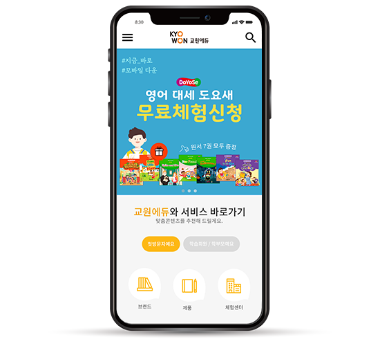
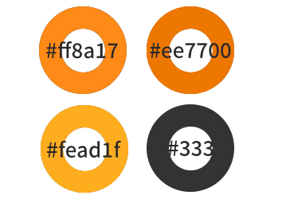

OVERVIEW
교원그룹은 아이의 가능성을 키우고 더 크게 성장시키며, 학부모의 굳건한 신뢰 아래 국내 최고의 교육기업으로 자리매김했습니다. 기존 사이트는 시대를 앞서가는 비전과 맞지 않게 콘텐츠 구성이 단조롭고 세련됨이 부족했습니다. 다소 단조로운 웹사이트 첫 인상과 콘텐츠 구성을 보완하여 무채색을 추가하고 각각의 콘텐츠가 잘 드러나도록 시각적인 요소를 넣었습니다. 특히 모바일 버전에서는 맞춤 콘텐츠 서비스와 키워드로 제품확인하기 등의 정보를 넣어 모바일에서도 다양한 정보를 탐색할 수 있도록 사용자의 접근성을 높였습니다. 웹버전과 모바일버전 각각 퍼블리싱 작업을 진행하였습니다.
MEDIA QUERY
mobile 720px 제작
STYLE GUIDE
TYPOGRAPHY

COLOR
PAGE DESIGN
GOAL
복잡했던 전체메뉴를 직관적으로 리디자인하여 한눈에 파악하도록 합니다.
브랜드의 로고색을 활용하여 이미지를 강화하고 교재정보, 바로가기 서비스의 접근성을 높이도록 합니다.
CONCEPT
기존의 이미지를 유지하되 제품 찾기와 검색 기능을 강화하여 필요한 정보에 빠른 접근이 가능하게 했습니다.
특히 맞춤 서비스를 시각적 이미지 아이콘으로 메뉴를 구성하여 주목성을 높여 사용하기 편하게 디자인했습니다.
주 사용자가 학부모인 만큼 소통과 배움을 중시하는 기업 윤리를 반영하여 각 콘텐츠가 조화롭게 내용파악이 되도록 디자인하여 전반적으로 깔끔하고 정돈된 인상을 의도했습니다.
MOBILE DESIGN